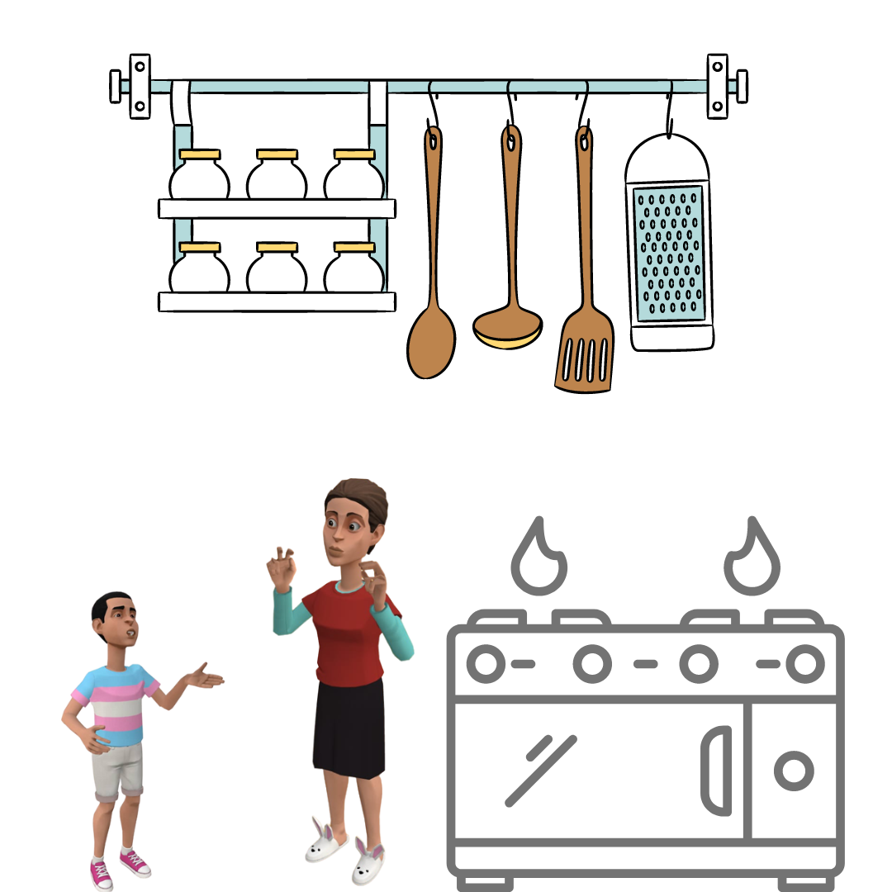
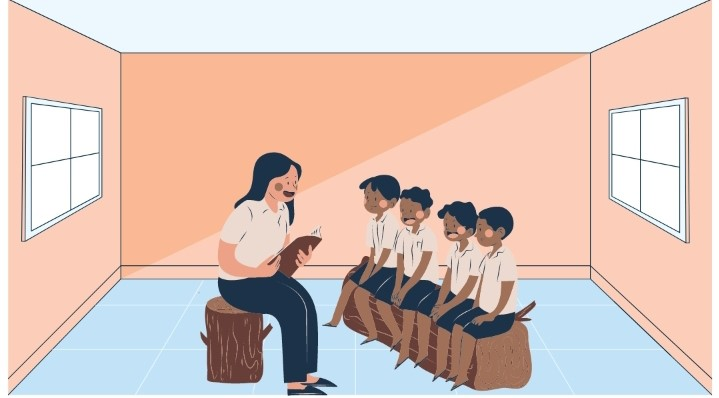
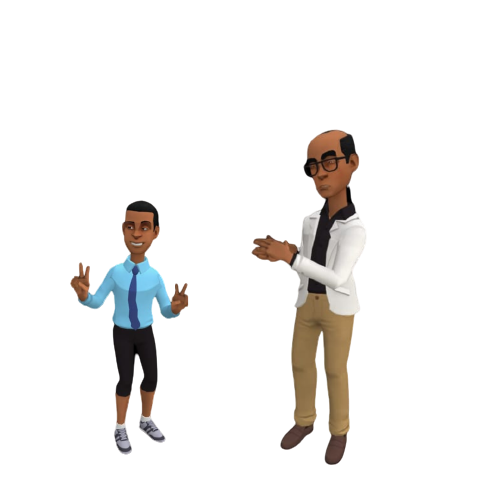
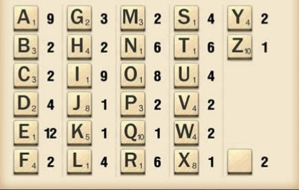
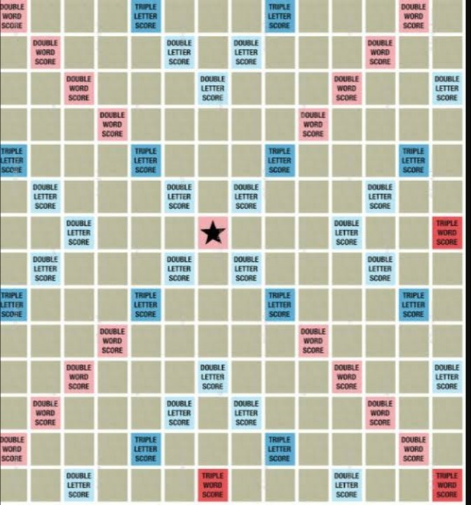
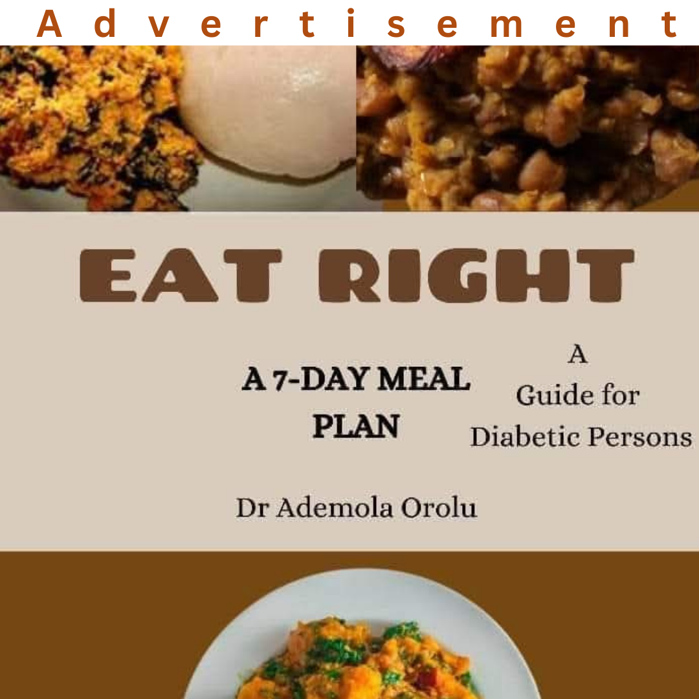
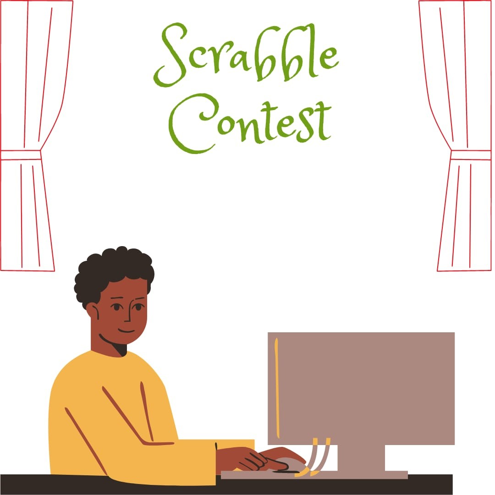

When I became a basic one pupil, at the age of six years, my mother began to give me more work to do in the kitchen. She taught me how to mix flour, butter, and sugar. She used the mixture for puff-puff and doughnut. A few times, she used it for cake. One day, while we were making snacks, I told my mum that I could spell doughnut. “Really, Sola?” my mother was surprised. “Yes,” I responded. “Okay, I am listening,” my mother stopped what she was doing, and waited for me to spell it. “D – 0 – U – G – H – N – U – T, doughnut,” I said. “That’s my boy!” my mother exclaimed. She was surprised that I had started enjoying spelling.
“Your father has been doing good work on your spelling,” she said. She later taught me how to roll the dough of flour into puff-puff and doughnuts. She put them into hot groundnut oil on the cooker.
I began to appreciate my father's efforts when I became a basic two pupil. Many times, during English language tests, Ms Florence - our class teacher - made us spell long words. I did well in the spelling exercises. In my school, all the pupils from basic two to five were registered in the spelling club. We had several club meetings that held at noon on Wednesday. We were required to join two clubs. I joined the cooking club also. My mother was happy with my choice when I told her. Earlier, my father had told her that I needed more knowledge of spelling and other academic exercises than cooking. It was in the club that I learnt new words and their spellings like, “Understand: U – N – D – E – R – S – T – A – N – D,” and also “Digestion: D – I – G – E – S – T – I – O – N.”
My father bought me a Spelling Book. I wrote all the new words I learnt inside the book. I took the book to school and wrote the new words they taught us inside it. Within two months of joining the spelling club, I learnt more than a hundred new words. My parents were happy with my learning of words.
“Who can spell the word 'embarrassment'?” the headmaster asked at the assembly one morning. I was a basic three pupil. Within ten seconds, I had arranged the letters in my head. I expected many hands to be raised, especially by the pupils in basic four and five. I looked around; no hand was seen. Two minutes passed, and still, no hand was raised. Mr Adekola, the headmaster, was surprised. He did not hide his displeasure at all. “What have these pupils been learning in class and the spelling club?” he queried all the teachers. I saw all the teachers looking at their feet. It had never happened before. The teachers had never been openly challenged on any matter in the presence of the pupils. I hesitated to attempt the question. What if I was wrong? Then I saw teardrops on Ms Clementina's face. She was the phonetics teacher and spelling club instructor. She had coached us well. We just disappointed her. I could not watch her cry; I raised my hand.
“Sola Olakunle, do you want to try?” Mr Adekola encouraged me. All the teachers immediately raised their heads. Everyone looked in my direction. I immediately regretted my decision. It was too late. My heart began to beat faster. What if I was wrong? I thought again. “Go on, my boy,” the headmaster smiled at me. I swallowed a lump of saliva in my throat and then said: “E - M - B - A - R - R - A- S - S - M - E - N - T, embarrassment.” Mr Adekola's clap for spelling it correctly was very loud. He looked at everyone and wondered why they were not clapping too. Immediately, the whole school joined him to clap for me.
I looked at Ms Clementina's face. A smile had replaced the tear I saw earlier. I was happy. Mr Adekola dipped his hand into his pocket and brought out two five-hundred-naira notes. He shook me firmly with the money and gave me a warm hug. I never knew that there could have been such a reward for spelling words correctly. My father had only given me verbal encouragement.
Mr Adekola encouraged us to continue to practise spelling in the club. He told us that we could excel in all areas of our studies. The challenge at the assembly increased the coaching they gave us in the spelling club. One day, I was then a basic four pupil, Ms Clementina brought to the club meeting a square-shaped cardboard with several small square boxes drawn on it. She called it “Scrabble.” I liked it at first sight. She explained to us that we would start using Scrabble games to help our spelling. The Scrabble game has four parts. It has a board, a tile bag, one hundred tiles (which are kept in the tile bag), and four racks. The game can be played also on the computer.
Out of one hundred tiles, ninety-eight tiles have an English letter written on them. Two of the tiles are blank. The player will say what letter a blank tile represents while spelling words. Some squares on the Scrabble board have a few tips. These tips help a player score high points in the game. Some squares have “double letter score” or “triple letter score” written on them. Ms Clementina said that the point written on any tile placed on such a square would be doubled or tripled.
Some squares also have “double word score” or “triple word score” written on them. All the points on the tiles used to spell a word along such squares are added first. The sum is doubled or tripled to calculate the total point scored.
We were all excited by the introduction of Scrabble to our club meetings. “Minimum of two and maximum of four players are required to play the game,” Ms Clementina explained to us. Each player has a rack. Each player picks seven tiles from the tile bag. The player keeps the tiles on his or her rack. After every word played, the player picks new tiles from the bag. Every rack must have seven tiles until the bag becomes empty. The bag becomes empty at end of the game. In the computer version, the computer chooses tiles automatically for the player.
Ms Clementina also told us about a "premium" or “bingo” word. A player is said to have played a ”premium” or “bingo” word if all the seven tiles on the rack are used to spell a word. The player gets fifty extra points for playing a “premium” word. Ms Clementina asked us to buy English Dictionary so that we could confirm that the words we spelt on the Scrabble board were correct. She told us that any wrong spelling on the board is removed after checking in the English Dictionary. The player who spells the wrong word does not score any point. I mastered the game very fast. Lateef, a basic four pupil, also learnt it quickly. I won more of the games I played with Lateef. Later, we began to play the Scrabble game on the school’s computer. It was fun.
I told my father about the Scrabble game. He bought it and we played every Saturday. He told me that he played the game too while in secondary school. My father won almost all the games we played together. He played premium words many times.
When I became a basic five pupil, a few months before I graduated from primary school, Mr Adekola announced at the assembly that our school, St. Jude Nursery and Primary School, had been chosen for a Scrabble contest. He mentioned my name as the school’s representative. I became anxious because I had not participated in an inter-school competition before. The day was set. The contest held in a big hall in the Lagos Television complex. About five hundred people were in the hall. I had only seen less than two hundred people assembled in one place. That was in my church. Contesting in the presence of so many people scared me. My father drove Ms Clementina and me to the venue. He noticed my worry and made efforts to encourage me. Ms Clementina's soft hand on my shoulder calmed me better than my father’s efforts.
After we had settled in the hall, a man picked the microphone; he cleared his throat and introduced himself as the instructor for the contest. He read out the rules of the game. We played the Scrabble game on a computer. It was shown on a large screen from the computer each player used. The contestant from the other school was a girl who was taller than me. Her school is St. Thomas Preparatory School. She looked more confident like she had played in many inter-school competitions. I began to sweat a lot when I saw how bold she was.
The girl was the first to play. She spelt “School.” The sum of the points on her tiles was 11. In the game of Scrabble, the sum of the points on the tiles played by the first person is doubled. So, her score was 22. I played next. I did not like the letters on the tiles the computer picked for me. I could not spell a long word with them. The letters on my seven tiles were “A - V - H - L - L - H – T.” I added “A - L – L” to the end of the “H” that had been used to spell “School” already. I spelt “Hall.” My score was 7. The tile that has “H” on it has a point of 4. Tiles that have “A,” “L,” and “L” have a point of 1 on each of them. Therefore, playing “Hall” gave me a score of 4 + 1 + 1 + 1 = 7. The scores were 22 - 7. She was leading.
She played again and scored 38 points. Scores were now 60 - 7. I needed to do something to close the gap. I looked out for the squares having “double letter score” or “triple letter score” to have high points. I played and scored 43 points. The scores became 60 - 50. “This margin is fair,” I encouraged myself. Then she played a premium word. She spelt "Nervous" along a square that had “double word score” written on it. Her point was high. It was 60. It made me nervous. The computer automatically added extra 50 points for using all her tiles to spell a premium word. It made her total points 110. The scores became 170 - 50. The audience clapped for her. She was leading with a wide margin. My palms became moist and uncomfortable. I looked at the screen and found an opportunity to play along a square that had “triple word score” written on it. I scored 72. The scores became 170 - 122.
The girl and I continued to play in turns. She played and the scores became 192 - 122. I played; it became 192 - 160. She played; the scores became 230 – 160. I was able to play a high-scoring word and had 60 points. The scores became 230 -220. There was a murmur in the audience when I almost closed the gap. She played another premium word and the scores became 305-220. Each of us had been given a bottle of water at the beginning of the contest. I almost finished mine because I had become very thirsty. I looked at my tiles and wished I could play a premium word. I was able to score 50 points with five tiles. The scores became 305 – 270. The game continued. I was later able to lead her briefly when the scores became 420-435.
She played and began to take the lead again. The computer then notified us that there were no more tiles left. We were near the end of the game. The scores had become 510 – 495. She played a five-letter word and scored 18 points. She had two tiles left on her rack. The scores were 528 – 495. I still had all seven tiles on my rack. The letters on my tiles were “I – E – N – G – Y – H – E.” My tiles were seen by everyone because it was my turn. I first thought I had seen a premium word. I looked at my rack again and was not so sure.
I don’t know why I looked into the audience for the first time during the game. I looked towards the place my father sat. He smiled and was full of excitement which I did not understand. Has he seen a premium word? I thought. I rearranged the tiles. I spelt “H – I – E – G – Y – N – E.” It then became clear to me. I wanted to exclaim. I rearranged them again and spelt “H – Y – G – I – E – N – E,” hygiene. My point was 25. For spelling a premium word, extra 50 points were added automatically. I scored 75 points. The scores became 528 – 570. The girl yelled. I was almost certain that I had won the game but I needed to wait for her to play her two remaining tiles. After waiting for almost ten minutes, she played and scored 22 points. Final scores were 550 – 570. I won the contest!
Spelling “Hygiene” won the game for me. I recalled that it was the first word my dad asked me to spell. I couldn’t hide my excitement as I jumped on him and hugged him tightly when I got back to my seat. He was the hero, not me. He had seen the future while I thought he was disturbing me with spelling words. I was given a laptop and other prizes. My school was given a complete set of desktop computer.
Author: Ademola Orolu